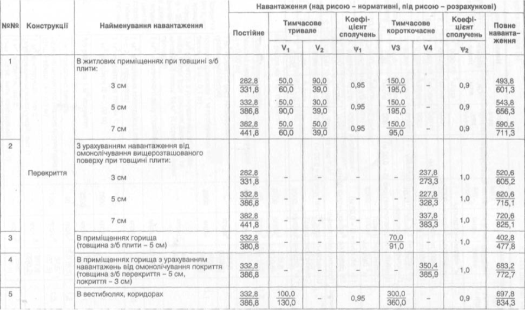

| №№ | Конструкції | Найменування навантаження | Навантаження (над рискою – нормативні, під рискою – розрахункові) | |||||||||
|---|---|---|---|---|---|---|---|---|---|---|---|---|
| Постійне | Тимчасове тривале | Коефіцієнт сполучень | Тимчасове короткочасне | Коефіцієнт сполучень | Повне навантаження | |||||||
| V1 | V2 | ψ1 | V3 | V4 | ψ2 | |||||||
| 1 | Перекриття | В житлових приміщеннях при товщині з/б плити: | ||||||||||
| 3 см | 282,8 331,8 |
50,0 60,0 |
90,0 39,0 |
0,95 | 150,0 195,0 |
— | 0,9 | 493,8 601,3 |
||||
| 5 см | 332,8 386,8 |
50,0 90,0 |
30,0 39,0 |
0,95 | 150,0 195,0 |
— | 0,9 | 543,8 656,3 |
||||
| 7 см | 382,8 441,8 |
50,0 60,0 |
50,0 39,0 |
0,95 | 150,0 95,0 |
— | 0,9 | 590,5 711,3 |
||||
| 2 | З урахуванням навантаження від омонолічування вищерозташованого поверху при товщині плити: | |||||||||||
| 3 см | 282,8 331,8 |
— | — | — | — | 237,8 273,3 |
1,0 | 520,6 605,2 |
||||
| 5 см | 332,8 386,8 |
— | — | — | — | 227,8 328,3 |
1,0 | 620,6 715,1 |
||||
| 7 см | 382,8 441,8 |
— | — | — | — | 337,8 383,3 |
1,0 | 720,6 825,1 |
||||
| 3 | В приміщеннях горища (товщина з/б плити – 5 см) |
332,8 380,8 |
— | — | — | 70,0 91,0 |
— | 1,0 | 402,8 477,8 |
|||
| 4 | В приміщеннях горища з урахуванням навантажень від омонолічування покриття (товщина з/б перекриття – 5 см, покриття – 3 см) | 332,8 386,8 |
— | — | — | — | 350,4 385,9 |
1,0 | 683,2 772,7 |
|||
| 5 | В вестибюлях, коридорах | 332,8 386,8 |
100,0 130,0 |
— | 0,95 | 300,0 360,0 |
— | 0,9 | 697,8 834,3 |
|||